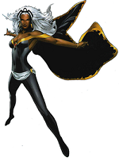

Best School For Teenagers With Super Power
Pr. Charles Francis Xavier has the finest mind in this earth. He can control minds and can teach students if they have the potential.
Pr. Scott Summers aka "Cyclops" can shoot powerful beams of energy from his eyes. He can teach you shooting laser and similar kind of beams.
 Pr. Ororo Munroe aka "Storm" can control and manipulate weather and create heavy thunderstorm. She can teach you to play with the weather.
Pr. Jean Elaine Grey-Summers aka "Phoenix" can control the super powerful phoenix force. She can teach students controlling phoenix force and deploy it in real time.
Pr. Henry Philip "Hank" McCoy aka "Beast" have super strength and a geneus brain. He can teach students hand combat, super jump etc.
Pr. Piotr Nikolaievitch "Peter" Rasputin aka "Colossus" also have super strength and a vast knowledge in hand combat. He can teach students different types of hand combats.
Pr. Raven Darkhölme aka "Mystique" is expert in shape shifting, also expert in technical fights. She can teach students about shape shifting .
Pr. Robert Louis "Bobby" Drake aka "Iceman" can control and create ice. He can teach students how to create ice and use it as weapon.
Pr. James "Logan" Howlett aka "Wolverine" have claws made of steel and have a supernatural healing power. He had plenty of real life fights won. He can teach students about real life fights and how to face any situation.